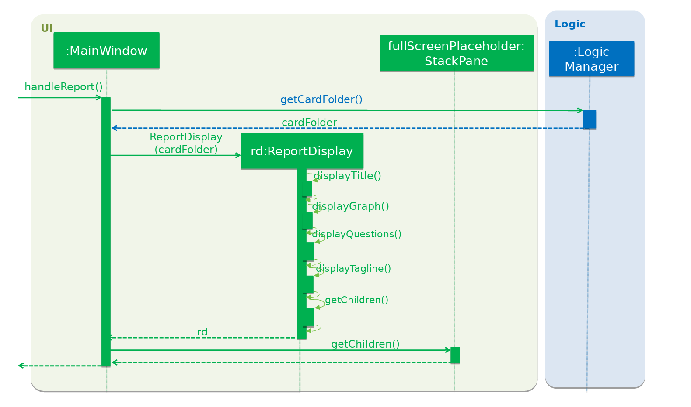

Overview
Know-It-All is a flashcard application that helps students manage, store, and use flash cards effectively. The user interacts with it using a CLI, and it has a GUI created with JavaFX. It is written in Java, and has about 10 kLoC. My major roles included the report feature and ability to record score. To see directly what code I contributed, a summary provided by RepoSense is available here.
Summary of contributions
Below is a summary of my coding, documentation, and other helpful contributions to the team project. |
-
Major enhancement: added the ability to generate test scoring report for card folder
-
What it does: Records the number of questions correctly answered after a test session, called the test score, and generates a report for that folder that shows the change in (past) test scores. There is also a line showing percentage change in test score as well as the lowest individual scoring cards in the current folder. Test scores are only recorded if at least 1/4 of the questions in the folder are attempted. An example is shown below.
-

-
Justification: This feature improves the product significantly because a user can see the outcome of the spaced-repetition technique employed by Know-It-All. They are able to track their average score over time, per folder, so that they are able tell which folders they score well and not so well for. This lets them know which folder they need to practice more on. Also, the minimum number of questions required to be answered is so that the user do not get their accidental test attempts recorded.
-
Highlights: This enhancement has a graph showing a maximum of the 10 test session scores. The color of the folder score change also changes based on whether it was a positive, same or negative change.
-
-
Major enhancement: added the ability to sort by scoring performance
-
What it does: allows the user to sort the cards by scoring performance. Other features can make use of this feature by using any appropriate comparator.
-
Justification: This lets the user see which cards they scored the lowest on, so that they know which cards require more practice. This feature also improves the product significantly because many other features can be built on top of this one, e.g. the test session, which puts the lowest scoring cards in front.
-
Highlights: This enhancement affects the existing list. It required an in-depth analysis of design alternatives. The implementation too was challenging as it required changing the way cards are naturally ordered.
-
-
Minor enhancement: Added State to Model Component’s to represent user’s "location" in the application. This removes edge cases of commands being executed illegally, i.e. where they otherwise shouldn’t be.
-
Minor enhancement: added a score attribute that allows the application to track the number of correct and incorrect attempts for individual cards.
-
Code contributed: [ability to sort] [add score attribute][add report]
-
Other contributions:
Contributions to the User Guide
Given below are sections I contributed to the User Guide. They showcase my ability to write documentation targeting end-users. |
I implemented a new report command as well as sort command, which required updates to the user guide so that new users know how to use it.
Report Operations
After testing, you can track how you scored against previous attempts using our report feature. Because test sessions are run for cards in a folder, the test scores are tracked per folder.
Display a test score report : report
Displays a full-screen test score report for the current folder. The report comprises a graph showing a maximum of the last 10 test scores, the latest score change, and a maximum of 3 lowest individual scoring cards and their individual card scores. An example is shown below:
| The report display is currently best viewed with the window in full screen. Otherwise, you may need to use the horizontal and vertical scroll bars to view the graph and questions. Hang tight, a display that changes in size is coming in v2.0! |
Displays response time for each card Coming in v2.0
With the timer feature coming in v2.0, we are also able to track the time taken to provide the correct response to the question. This provides yet another metric, in addition to correctness, to judge your understanding of the topic.
Format: report
| This command is only valid inside a folder. |
-
There must be at least two test attempts for the line graph to be drawn.
End the current report session : end
Quits the current report session.
Format: end
| This command is only valid inside a report display. |
Sort flashcards by score within a folder : sort
Displays all flashcards sorted such that the lowest card scores are at the top temporarily.
Format: sort
Contributions to the Developer Guide
Given below are sections I contributed to the Developer Guide. They showcase my ability to write technical documentation and the technical depth of my contributions to the project. |
Besides the aforementioned new features for users, I also refactored internal code which affects how other developers should contribute to the project, namely how to pass results from Model into Ui and Model state that the user is in.
Report feature
Current Implementation
The report feature is meant to provide the user with the ability to look back and compare their test score from previous test sessions. It makes use of Java FXML features to display scores in a user-friendly manner. The following methods are used to enter or exit the report display:
-
Model#enterReportDisplay()— Enters the report display for this folder. -
Model#exitReportDisplay()— Exits the report display back into the folder.
Here is a screenshot of how it looks:
Given below is an example usage scenario and how the report display is rendered.
Step 1. The user is in a folder and wishes to see a report by executing report.
Step 2. A ReportCommand is created and executed by LogicManager. Model#enterReportDisplay() is called, which prepares
the model for report by sorting the cards by lowest scores first. The state is also checked to make sure the user is in
a folder.
Step 3. A CommandResult with type ENTERED_REPORT is returned by the ReportCommand.
Below is a sequence diagram, summarizing the above operations.

Step 4. The CommandResult is passed to UI, which now has to render the new screen. It does so by getting the current
CardFolder from Model, then instantiating a ReportDisplay with it. ReportDisplay prepares several elements for
display by Java FXML, split by their content:
-
ReportDisplay#displayTitle()— Displays title and how many test scores were recorded. -
ReportDisplay#displayGraph()— Takes maximum of last 10 test scores fromCardFolder, and adds them as points on the Java FXMLAreaChart. -
ReportDisplay#displayQuestions()— Displays maximum of 3 questions fromCardFolderwhich have lowest the individual card scores. -
ReportDisplay#displayTagline()— Calculates change in test score from last and second last test session (if available) and formats it in a user-friendly manner.
Step 5. The ReportDisplay is rendered by fullScreenPlaceholder.
Below is a sequence diagram summarizing steps 4 and 5. The interactions with Java FXML elements are omitted for clarity.

Design Considerations
Aspect: How to display test scores
-
Alternative 1 (current choice): Display previous test scores in a graph and lowest scoring cards
-
Pros: Has benefits of seeing the graph as well as knowing which cards the user needs help in.
-
Cons: More performance and memory intensive. Screen may get messy if there are too many items.
-
-
Alternative 2: Display previous test scores in a graph
-
Pros: More visual, easier to see change in test score.
-
Cons: More performance and memory intensive as a graph needs to be rendered. Remedy: Display only last ten.
-
-
Alternative 3: List the previous test scores
-
Pros: User can see more accurate numbers. They can also see the individual card scores, so that they can tell where they need help.
-
Cons: Hard to see change from test session to test session.
-
Aspect: Where to display test scores
-
Alternative 1 (current choice): Display in full screen, entered from card folder
-
Pros: Works because the test scores are scored by card folders.
-
Cons: Need to implement a new state for commands, because it should not be possible to do some e.g. add card while in fullscreen report.
-
-
Alternative 2: Display in right panel, with cards on the left
-
Pros: User can see all their cards at the same time.
-
Cons: Less space to render report details such as graph.
-
State
Current Implementation
Model
Previously, Model did not have a concept of state as there was only one screen where the user could be. But as Know-It-All grew, there are more screens that a user can be in and more commands that can only be executed in certain screens. Thus there is a need to manage the state in Model.
Design Considerations
Aspect: How to manage state
-
Alternative 1 (current choice): Use enum of States
-
Pros: Fixes the states that Model can be in. By design, only one state can be true at any point in time, if state is set to type State which is a enum.
-
Cons: Need to add new states to enum.
-
-
Alternative 2: Use Strings
-
Pros: No need to define new states. Trivial to change into new state: Simply set state to "folder", or "homeDir". Easy to check as well, e.g. to Check state == "folder".
-
Cons: Becomes very unsafe as even a typo would mean entering a state that other parts of the application would not understand. e.g. Setting state to "Folder" instead of "folder".
-
-
Alternative 2: Use boolean flags
-
Pros: Easy to manipulate. Clear when there are only two states.
-
Cons: Becomes very messy when there are more states, since there is a need to ensure that only one boolean flag is true at any point in time. E.g., only one of inFolder, inHomeDir, inTest… can be true.
-
Viewing a report display
-
View report display
-
Prerequisites: Enter a folder. The tester may want to ensure that they have at least two test attempts on this folder, as a line graph requires at least two points to be drawn. (If there are fewer than two attempts, it is not a bug if no line is drawn.)
-
Test case:
report
Expected: Enters report display, where the display area enters fullscreen. A graph is displayed showing maximum of last ten test scores for this folder. A list, maximum of the three lowest scoring questions, is displayed.Report displayedis shown on the status message and status bar shows that tester is in report display. -
Test case: Other invalid commands such
test,add, or a secondreportcommand.
Expected: They should not be allowed. An error message will be displayed. -
Test case:
end
Expected: Ends the current report session, where the display area exits fullscreen and be back inside the folder.End Report Sessionis shown on the status message and status bar shows that tester is back inside the folder.
-
Sorting the cards
-
Sort
-
Prerequisites: Enter a folder. The tester may want to ensure that they have at least two cards in this folder, or else there is no way to tell if the sort happened.
-
Test case:
sort
Expected: Sorts cards in non-descending percentage score. If card A is above card B, card A will not have a higher percentage score than card B.Sorted flashcards with lowest score firstis shown on the status message.
-
UC06 Display report for a folder
MSS
-
Student enters the a folder.
-
Student indicates that they want to see the report for this folder.
-
System displays a full-screen report.
Use case ends